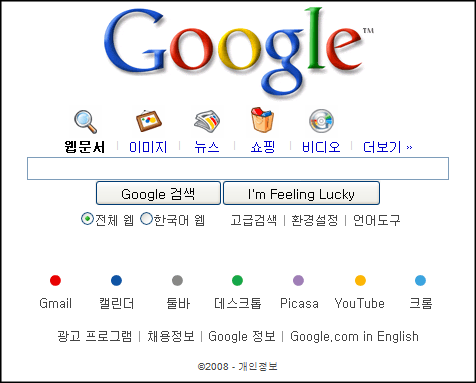

2008년의 구글 제품 Top 10

한 구글관련 블로그에서 2008년의 구글 Top 10 를 발표했다.
- 구글 블로거가 대폭 업데이트 되었다고 한다. 실제로 가끔 한번씩 써보면 텍스트큐브에 비해서 많이 기능이 떨어진다고 느낀다. 하지만 구글의 제품들과 많이 쓰기 쉽게 느껴진다.
- 피카사의 업데이트. 특히 피카사 웹에서의 얼굴 인식 태그 기능이 많이 주목받았었고, 피카사 3.x 버젼이 발표되었다. 사진 관리 프로그램으로 많은 사람들이 쓰기 시작했다. 나도 쓰고 있다 -0-;
- 구글 번역에 10개 언어가 추가되었다. 사실 한국어는 기존에 서비스되고 있어서 와 닿지 않는다. 한국에서는 오히려 구글 사전의 발표가 와닿을 듯 하다.
- 구글 독스(구글 오피스)에 PDF 읽기 기능, 양식, 템플릿, 가젯, 오프라인버젼(구글 기어) 추가. 구글 양식은 웹에서 쉽게 다른 사람들의 의견을 모으는 기능으로 꽤 재미있었고(내 결혼식의 방명록으로도 사용해봄), 템플릿은 현재의 기능만으로도 이만큼의 비주얼을 낼 수 있다는 지표를 보여주었다. 앞으로의 성장이 많이 기대된다.
- 유튜브의 고화질 버젼이 제일 눈에 띄인다. 자막 기능의 추가 등이 있지만, 사실 한국 서비스의 정식 출시가 제일 큰 이슈이며, 현재는 꽤 자리를 많이 잡았다. 특히 특정 사건과 연계되어 꽤 많은 인기를 얻었으나 아쉽게도 그 인기를 이어가지 못했었다.
- 안드로이드의 발표다. G1 의 발표로 시작되었으며, 이제 하나둘씩 꽤 많은 기업들이 앞으로 발표할 것이라고 기사를 내었다. 2009년에 어떤 성과를 보여줄지 개인적으로 많은 기대가 된다. 과연 한국에도 안드로이드 폰이 판매될 것인지...
- gmail 에 다양한 추가 기능들의 발표. 특히 비디오 채팅 기능은 플래시로 꽤 멋지게 구현되었으며, 개인적으로도 꽤 사용해보았던 기능이다. gmail 에 테마 기능도 좋은 반응을 얻었다.
- 구글맵의 스트리트뷰 영역이 상당히 넓어졌다. 미국, 프랑스, 이태리, 스패인, 오스트릴리아, 뉴질랜드, 일본등에서 현재 서비스되고 있다. 한국은 언제 서비스될지 미지수... 하지만 http://maps.google.co.kr 로 접속하면 한국에서도 지도 서비스가 된다는 게 이슈가 될만하다.
- 구글 검색에 많은 개선이 있었다. 페이지가 올라온 날짜 추가와 suggest 기능이 기본이 되었으며... 실제로 지금도 충분히 잘 쓰고 있는데 어떤 좋은 기능들이 추가될지 기대된다.
- 1위는 구글 크롬의 발표이다. 베타가 언제 끝날지 알 수 없는 구글인데, 출시 된지 얼마 안되어서 베타 딱지를 뗀 크롬이다. 웹에서의 최강자인만큼 웹 브라우저를 개선하는데 많은 힘을 쏟았다. 특히 그 속도는 대단한 관심을 모았다.
2009년에 구글은 또 어떤 발전들을 이룰까? 개인적으로 기대하는 것은 한국의 스트리트뷰와 안드로이드폰의 한국 발표. 그리고 스타벅스에서 제공되는 무료 무선 인터넷을 좀 더 넓혀서 모든 역과 모든 영화관, 모든 터미널로의 확대는... 너무 무리일까? ^^